Music is a big part of a lot of peoples’ lives, providing a soundtrack along each step of their journey. For some though, music means even more, a personal tool to not only express their own talents, but to share it with others. That rings true for Carson, California emcee Ab-Soul – born Herbert Anthony Stevens IV in 1987 – whose life has been intertwined with music since he took his first breaths. He caught the ears of rising Los Angeles company Top Dawg Entertainment (TDE) – home to Kendrick Lamar, ScHoolboy Q and Jay Rock – years ago and rounded out the talented crew. His latest project “Control System” was recently released to a large group of eager fans. It follows his critically- acclaimed pair of “Long Term Mentality” projects and has sparked passionate conversations among the genre over potential messages laced into the music, just as Soul planned. When asked to describe himself, he speaks of Einstein, Marley and Lennon. It’s only fitting. After all, like them, he’s ultimately a person who just wants to make music that people will remember and relate to.
“These guys have been going for quite some time now and we’re still talking about them. I definitely want to have that type of imprint.”
Walk the Moon (stylized as WALK THE MOON) is an indie rock band based in Cincinnati, Ohio. Lead singer and Cincinnati native Nicholas Petricca started the band in 2008 and went through several member changes before finally coming together with current members, Kevin Ray, Sean Waugaman, and Eli Maiman sometime in 2010. The band derives their name from the song "Walking on the Moon" by The Police. The group independently released their debut album, i want! i want!, in November 2010, receiving airplay for the track "Anna Sun" on WCRD, WFPK, WKNH, WRLT, and WTMD. In February 2011, Walk the Moon signed with Mick Management. They signed to RCA Records and released their first official album, Walk the Moon in June 2012. Their self-titled debut is composed of many of their original tracks from i want! i want! in addition to new tracks that were written specifically for the album and were meant to reflect the kind of energy the band produced in their live shows.
Both physically and culturally very large …his voice sells, the way Sinatra once sold an implacable but supple kind of confidence...Ross’s confidence can transfer easily to anyone’s inner life, with a little suspended disbelief, and that makes him a kind of motivational speaker. Feel as much like Ross as he does, and you become your own boss.
Believe it or not, it's been two years since Rick Ross's last solo album Teflon Don hit stores. Since then, his stature in the game has grown exponentially, with the growth of the Maybach Music Group brand, his epic Rich Forever mixtape-arguably the best rap album of 2012 so far-and a handful of stellar guest appearances. God Forgives, I Don't will likely determine Rick Ross's place in hip-hop history. The smart money says that Rick Ross will continue the growth curve he's exhibited with his first four releases-but expectations are higher than ever. If this record does what it's supposed to do, the Bawse will perfectly positioned to stake his claim as one of the greatest who ever did it.
When it comes to 2 Chainz’s career, he possesses a Zen-like patience. After forming Playaz Circle in 1997, the rapper formerly known as Tity Boi scored success 10 years later when the duo's 2007 Disturbing Tha Peace/Def Jam debut, "Supply & Demand," reached No. 3 on Billboard's Top R&B/Hip-Hop Albums chart on the strength of the No.15 single “Duffle Bag Boy," featuring Lil Wayne.
Two years and seven solo mixtapes later-together with a new moniker-the rapper is nearing critical mass. 2 Chainz released his DJ Drama-hosted Gangsta Grillz mixtape "T.R.U. REALigion," in November 2011, with features appearances from T.I., Birdman, Young Jeezy and Big Sean, a testament to his relentless touring regimen, self-financing and persistence. "My whole campaign is believing that I got this far by being independent and, at the same time, being true to myself," the 34-year-old says.